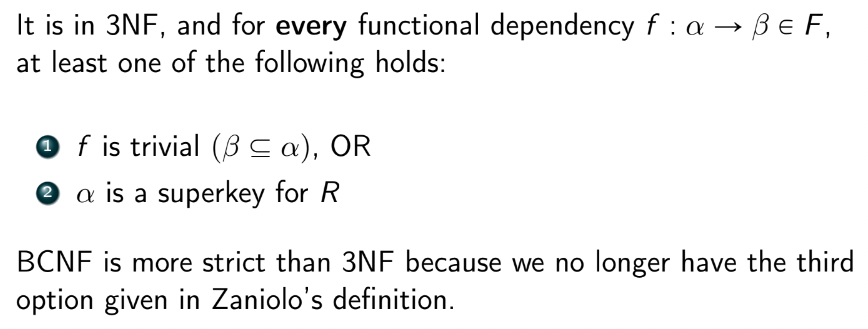

Normalization
- the process of refactoring tables to reduce redundancy in a relation
- involves splitting a table with redundant data into two or more non-redundant tables
- separates concerns in DB
- prevents data integrity issues / anomalies on insert, delete, and update (due to dependencies between the redundancies)
- insert: might have NULL cols (e.g. videos that don't have comments)
- update/delete: have to update/delete more times for each redundant row
- allows us to query over columns that actually matter
- tables without redundancies are called normalized
- when there are redundancies in a table, we can decompose the table using functional dependencies
- Q: are there cases where denormalized tables are good?
- yes! e.g. read-heavy table when we don't have to worry about timeliness
- this is how data warehouses work
Functional Dependencies
- given a relation R with sets of attributes X,Y, X functionally determines Y iff each value of X is associated with exactly one value of Y
- i.e. for all tuples t1,t2∈R, X→Y⟺t1[X]=t2[X] implies t1[Y]=t2[Y]
- notated X→Y
- aka uniquely determines, uniquely defines, identifies, maps to
- Heath's Theorem
- if a relation R over attribute set U satisfies functional dependency F:X→Y, then R can be split into two smaller relations R1,R2 satisfy the lossless-join decomposition property R=ΠXY(R1)⋈ΠXZ(R2) where Z=U−XY are the rest of the attributes
- i.e. if X→Y then we can split a table into two
-
- XY
-
- X and everything else except for Y
- X is the join key
- example:
- Properties of Fundctional Dependencies
- Armstrong's Axioms
- Reflexivity - if B⊆A then A→B
- e.g. A→A,AB→A
- Augmentation - if A→B, then AC→BC
- Transitivity - if A→B and B→C, then A→C
- Union - if A→B and A→C, then A→BC
- Composition - if A→B and C→D, then AC→BD
- Decomposition - if A→BC, then A→B and A→C
- Pseudotransitivity - if A→B and BD→C, then AD→C
- Canonical Cover
- the set of all functional dependencies is F+
- canonical cover - a basis/minimal set Fc (not unique) that is equivalent in implication to F+
- summarizes all FDs in a relation
- like a basis for FDs
- algorithm to find basis:
-
- create singletons of the form XYZ...→A using decomposition
-
- remove extraneous attributes/FDs
- e.g. if we have A→C and AB→C, we can get rid of the latter
- now the set is mostly in the form A→B
-
- remove inferred/redundant FDs
- e.g. if an FD can be formed by two other FDs via transitivity, remove it
-
- clean up with Union
-
- repeat until FD set is stable
- algo restated:
- a metric for measuring whether a particular schema is in a good form
- First Normal Form (1NF)
- satisifies all of the following:
- flat and simple (no nesting/collections)
- no repeated groups
- i.e. nonsense ordering of columns
- e.g. cols class1, class2, class3 that an instructor is teaching
- there is a unique key
- no null values
- "all non-key attributes depend on a key"
- to conver to 1NF:
- add primary key
- remove/handle NULLs
- explode collections into more rows
- Second Normal Form (2NF)
- a relation R is automatically in 2NF if it does not contain any composite keys and is in 1NF
- otherwise R is in 2NF iff every attribute A∈R satisfies either of the following:
- A appaers in a candidate key
- A entirely depends on an entire key
- i.e. A is not partially dependent on any composite candidate keys
- "each attribute depends on the key, the whole key"
- Third Normal Form (3NF)
- a relation is in 3NF if it is in 2NF AND:
- all attributes that are not part of any candidate key (called non-prime attributes) must depend only and directly on the candidate key(s) and nothing else
- i.e. transitivity is not allowed
- i.e. no non-prime attributes can depend on some non-key attribute
- trick: if all attributes in R are part of a candidate key, then R is automatically in 3NF by definition
- "all non-key attributes depend on a key, the whole key, and nothing but the key"
- theoretical definition (Zaniolo)

- #3 distinguishes 3NF from higher order normal forms
- in practice, 3NF is usually good enough
- Boyce-Codd Normal Form (BCNF / 3.5NF)
- 
- decomposing to BCNF

- decompositions are NOT unique
- some may be dependency preserving, some may not be
- trick: any relation that only contains 2 attributes is in BCNF
- very few 3NF are not in BCNF
- typically happens when CKs overlap
- as NF incr, redundancy decr, but data integrity also might decr
Lossless Decomposition
- if we decompose R into R1,R2, we want R1⋈R2=R
- a consequence of this is ∣R1⋈R2∣=∣R∣
- lossless decompositions satisfy the following:

- #1 checks that we don't lose attributes by decomp
- #2 checks we have attributes in common (the join key)
- two ways to test for losslessness:
-
- test R1⋈R2=R
-
- test the 3 conditions above
- all decompositions into 1/2/3/B/4NF are lossless
- but 5/6NF are not guaranteed to be lossless
Attribute Closure
- for any set of attributes A⊆R, the closure of A is all of the attributes in R that can be derived by the functional dependencies of R
- uses of attribute closure:
Dependency Preservation
- when we decompose R into subrelations, we want functional dependency contraints to still hold (for data integrity reasons)
- most obvious way to see a dependency is preserved is to see if both left and right sides are contained in a single subrelation
- need to check that all FDs in F can be derived from FDs that hold on each subrelation (F1∪⋯∪Fn)=F+ where Fi the set of FDs that hold on subrelation Ri
- attribute closure algo (Ullman)
- only normal forms up to and include 3NF guarantee dependency preservation
The Point
- when designing DBs, we want it to be BCNF, lossless, and dependency preserving
- sometimes not possible to get all 3, so may use 3NF is we want to guarantee dependency preservation